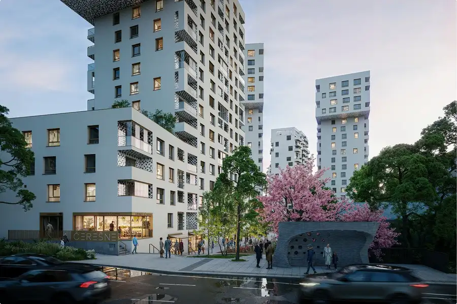
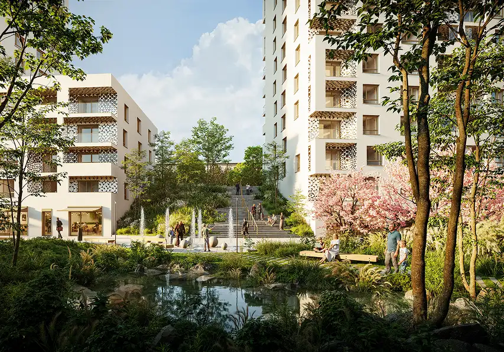
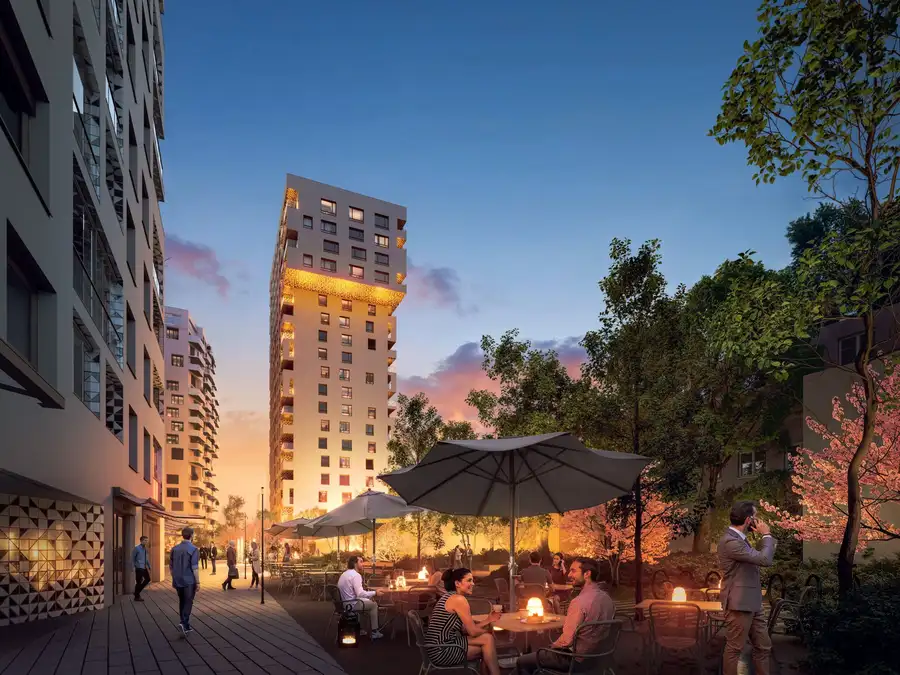
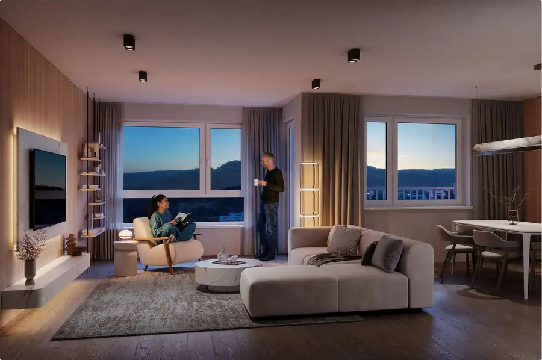
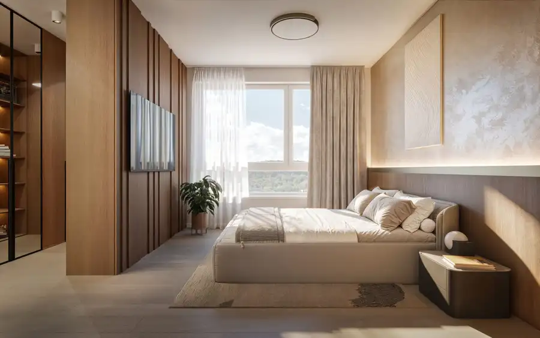
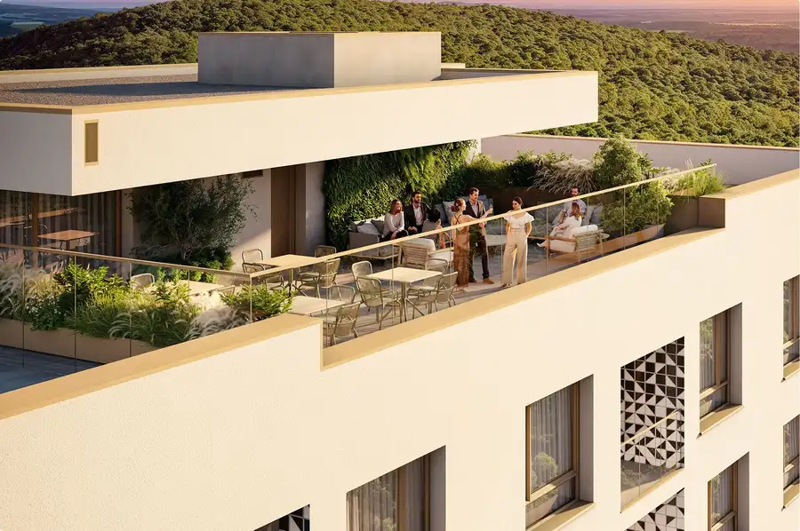
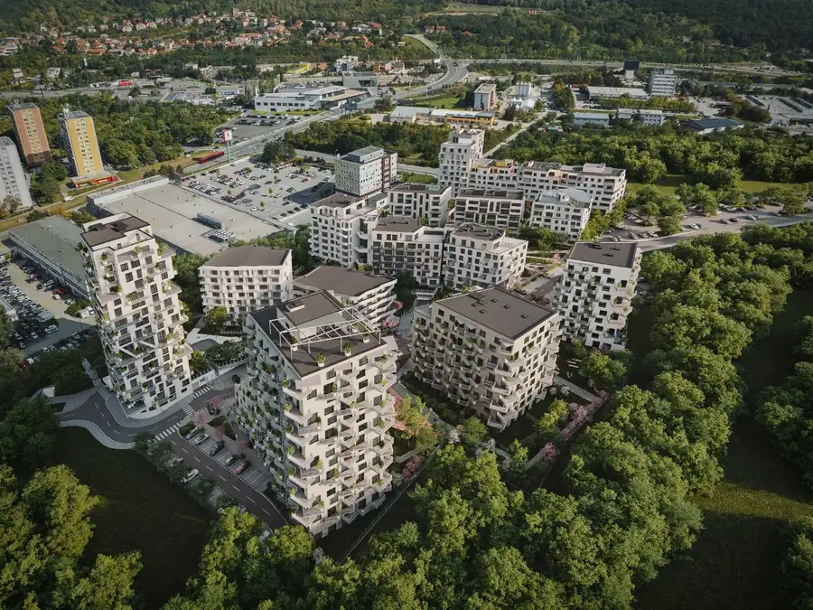
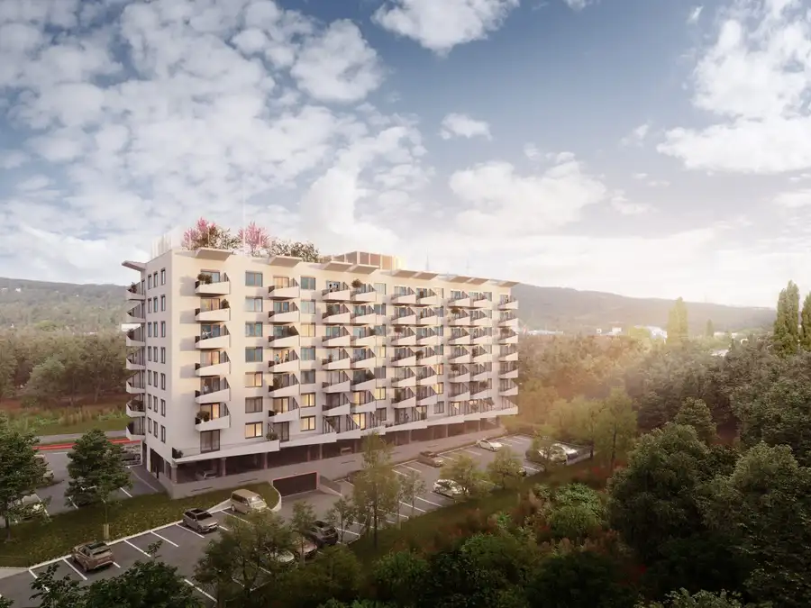

Čerešne Plaza - výhodný predpredaj novej etapy, 3-izbových bytov s prémiovým nadštandardom, Dúbravka - Polianky
Dúbravka, Bratislava






- Dispozícia3-izbový
- Plocha58.98 m²
- Poschodie5. z 16
- StavVo výstavbe
- VlastníctvoOsobné
- Energetická triedaA
O nehnuteľnosti
Najnovšia etapa známych Čerešní ktorá prináša ešte väčší komfort bývania.Ponúkame Vám na predaj 3-izbové byty v etape Plaza projektu Čerešne. Byty sa budú kolaudovať zhruba v roku 2029. Sú v rôznych dispozíciách, s lodžiami a krásnymi výhľadmi, nachádzajú sa na bratislavských Poliankach v Dúbravke, 12 minút cesty autom do centra Bratislavy ale aj s výbornou dostupnosťou MHD.Aktuálnu ponuku všetkých, nielen 3-izbových bytov v budovách "T", "U" a "V" nájdete na webovej stránke:https://www.ceresne.sk/ponuka-bytovČerešne Plaza prináša ešte lepší nadštandard, energetickú úspornosť a moderné prvky technológií a zariadenia. Medzi mnohými spomeniem napríklad solárne panely pre úsporu EE, stropné kúrenie aj chladenie (s predprípravou na ovládanie mobilným telefónom), zvýšená nepriezvučnosť deliacich priečok, atď. Celkovo Čerešne vynikajú jedinečnou architektúrou, vysokou kvalitou stavby, nadčasovosťou, dôrazom na komunitné spolužitie, ale najmä prémiovým nadštandardom.Mestská atmosféra čaká obyvateľov na námestí plného rôznych prevádzok, s detským ihriskom, malou lezeckou stenou, jazierkom, ale aj v priľahlom lese Sitina s bežeckými trasami a priamym napojením na cyklotrasy v Železnej studienke.Veľmi rád Vás oboznámim so všetkými detailmi, ktoré robia tento projekt taký unikátny a žiadaný.Peter Král0905 440 661kral@itb.skTeším sa na naše stretnutie.
Parametre
- Bezpečnosť
- Bezpečnostné dvere, Elektronická brána, Elektronický zámkový systém
- Cena vrátane energií
- Nie
- Doprava
- MHD, Diaľnica, Cesta, Cyklistická infraštruktúra
- Druh
- 3 izbový byt
- Dátum zverejnenia
- 14. 01. 2026
- Energetická náročnosť
- Energeticky úsporný
- Energetický certifikát budovy
- A
- Orientácia
- Juhozápadná, Západná, Južná
- Podlažie
- 5
- Počet izieb / miestností
- 3
- Počet lodžií
- 1
- Počet nadzemných podlaží
- 16
- Rok kolaudácie
- 2029
- Rok výstavby
- 2026
- Stav nehnuteľnosti
- Vo výstavbe
- Telekomunikácie
- Internet, Optická sieť
- Typ
- Predaj
- Typ konštrukcie
- Železobetónová
- Umiestnenie
- Ďalšie nadzemné podlažie
- Vlastníctvo
- Osobné
- Vybavenie
- Výťah, Bezbariérový prístup, Detské ihrisko, Recepcia, Úschovňa bicyklov, Nabíjacia stanica elektromobilov, Lodžia
- Vybavenie objektu
- Štandardné
- Vykurovanie
- Iné, Tepelné čerpadlo, Fotovoltaické panely, Klimatizacia
- Úžitková plocha
- 58.98 m²
Kde to je


Mohlo by Vás zaujímať

BytNové 278 178 €Čerešne Residence - predaj posledných 2-izbových apartmánov určených na trvalé bývanie s prémiovým nadštandardom, Dúbravka - Polianky Dúbravka, Bratislava 2-izbový52.98 m²1. podlažie
BytNové 240 509 €Čerešne Residence - predaj 2-izbových apartmánov určených na trvalý pobyt s prémiovým štandardom, Dúbravka - Polianky Dúbravka, Bratislava 2-izbový46.1 m²2. podlažie